| Characteristic | N = 23,3821 |
|---|---|
| Bird Family | |
| Albatross | 10,419 (45%) |
| Petrel/Shearwater/Prion | 9,638 (41%) |
| Gull/Tern | 1,022 (4.4%) |
| Skua/Jaeger | 453 (1.9%) |
| Penguin | 43 (0.2%) |
| Gannet/Booby | 580 (2.5%) |
| Cormorant/Shag | 25 (0.1%) |
| Frigatebird/Tropicbird | 32 (0.1%) |
| Unidentified/Other | 1,170 (5.0%) |
| Bird count | 51.9 (1,616.5) |
| Season | |
| Autumn | 4,683 (20%) |
| Spring | 6,894 (29%) |
| Summer | 7,027 (30%) |
| Winter | 4,778 (20%) |
| Cloud cover | |
| Clear | 3,978 (17%) |
| Overcast | 6,373 (27%) |
| Partially Cloudy | 13,031 (56%) |
| Precipitation | |
| None | 20,208 (86%) |
| Rain/Showers | 2,330 (10.0%) |
| Harsh Weather | 844 (3.6%) |
| Unknown | 0 (0%) |
| Number of birds feeding | 1,739 (7.4%) |
| Number of birds flying past | 9,406 (40%) |
| Number of birds following ships | 11,101 (47%) |
| Sea state | |
| Calm, Rippled | 1,484 (6.3%) |
| Moderate | 7,858 (34%) |
| Rough | 4,028 (17%) |
| Slight | 9,231 (39%) |
| Smooth | 1 (<0.1%) |
| Very Rough | 780 (3.3%) |
| Longitude | 152 (18) |
| Latitude | -40 (7) |
| 1 n (%); Mean (SD) | |
Bird Sightings at Sea: Comprehensive Analysis and Predictive Modeling
Introduction/Data
Project Overview
This project explores bird sightings at sea using data from TidyTuesday (April 14, 2026). Each observation communicates the data that an observer witnessed during a 10-minute period at a port. Our goal is to understand the geographic distribution of bird sightings and predict flock sizes based on environmental factors like climate and location.
Data Source & Context
The data captures observations of birds at sea, climate conditions, and ship activity. We integrated four tables: birds (sightings), ships (sessions), beaufort_scale (wind), and sea_states (ocean conditions).
Each row in our composite data frame records data on one species that an observer witnessed during a 10-minute observation period at a port. For example, there may be five rows in our data frame that share the same observation session ID; each row communicates the observations about a unique bird species during that session, and the aggregate of the five rows’ observed bird counts is the total number of birds, regardless of species, observed during the 10-minute observation period. We explored observed bird counts per session both at the by-species level and at the overall session level.
Key Variables
- Outcome: Number of birds observed (often transformed into intervals or binary presence).
- Predictors: Southern hemisphere season, longitude, latitude, precipitation, cloud cover, and sea state.
NoteCodebook
| Variable | Type | Description |
|---|---|---|
species_family |
character | Bird family, created by grouping species |
count |
integer | Number of birds counted in the observation |
feeding |
logical | Birds observed feeding |
flying_past |
logical | Birds observed flying past the ship |
following_ship |
logical | Birds observed following the ship |
cloud_cover |
ordered | “Clear”, “Partially Cloudy” or “Overcast” |
season |
ordered | Southern hemisphere season |
precipitation |
factor | Precipitation type (Rain, Snow, Fog, etc.) |
sea_state_description |
ordered | Description of sea state (Calm to Very Rough) |
longitude |
double | Decimal longitude |
latitude |
double | Decimal latitude |
Methodology
Data Wrangling and Transformation
We merged the separate data frames by identifier columns to form an initial data frame with 49,019 observations.
Data Cleaning
We chose to exclude observations with missing data to ensure that our exploratory assessments were not distorted. We first removed any observations missing core variables (count, species, coordinates, time). Next, we performed an iterative process:
Removed variables with > 60% missing data.
Removed observations with > 60% missing variables.
Removed variables with > 20% missing data.
Removed observations with any remaining missing data.
This left us with 23,382 observations and 40 variables.
Feature Engineering
- Species Family: Grouped individual species into families (e.g., Albatross, Penguin) to ensure statistical utility.
- Weather Grouping: Collapsed rare weather events into broader categories (“None”, “Rain/Showers”, “Harsh Weather”).
- Log Transformation: Applied
log10(count + 1)to address the extreme right-skew of bird counts, though we largely moved beyond this approach when possible to maintain interpretability. - Categorization: Created multi-level intervals (0-10, 11-50, etc.) for flock size prediction and binary dichtomizations (e.g., solo bird vs. flock and flock size less than or greater than 50 birds)
- Session-level aggregation: Calculated the session-level total bird counts by, for each session, taking the aggregate of the counts of each observed species.
| Characteristic | N = 23,3821 |
|---|---|
| Bird Count Interval | |
| 0-10 | 21,492 (92%) |
| 11-50 | 1,321 (5.6%) |
| 51-100 | 204 (0.9%) |
| 100+ | 365 (1.6%) |
| 1 n (%) | |
| Characteristic | N = 6,2181 |
|---|---|
| Solo vs. Flock | |
| Solo bird | 474 (7.6%) |
| Flock (2+ Birds) | 5,744 (92%) |
| 1 n (%) | |
Table 1 demonstrates that the majority of bird count observations recorded less than ten birds but more than just one bird.
Data Overview
Table 2 conveys the overall composition of our data. Most birds were of the Albatross or Petrel/Shearwater/Prion families. Bird observations were relatively evenly distributed across seasons, but much more commonly appeared during partially cloudy days with no precipitation and a slight to moderate sea state.
Analysis Strategy
We focused on exploratory data analysis of and classification models that predict bird presence and flock sizes.
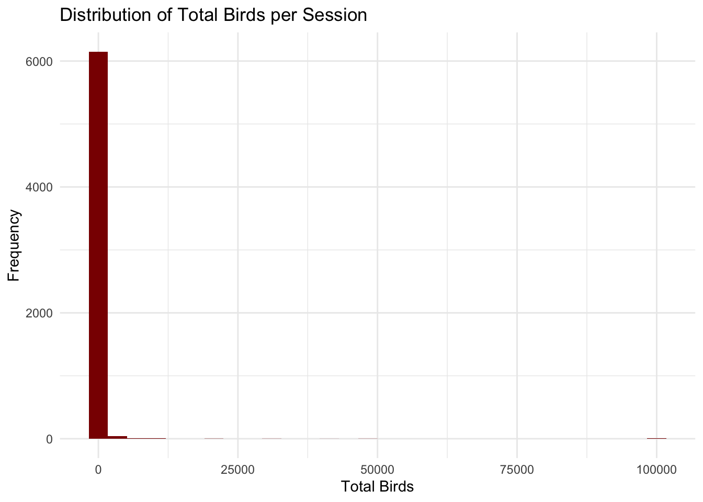
As observed in Figure 1, our data were extremely skewed. This motivated our use of the intervals that we engineered for EDA and the following classification models:
Logistic Regression (Model 1): Solo bird vs. Flock (presence of >1 bird).
Logistic Regression (Model 2): Large flocks (>50 birds) using session-level aggregates.
Decision Tree: Multi-class classification of flock size intervals.
Results
Exploratory Data Analysis
Bird Activity and Distribution
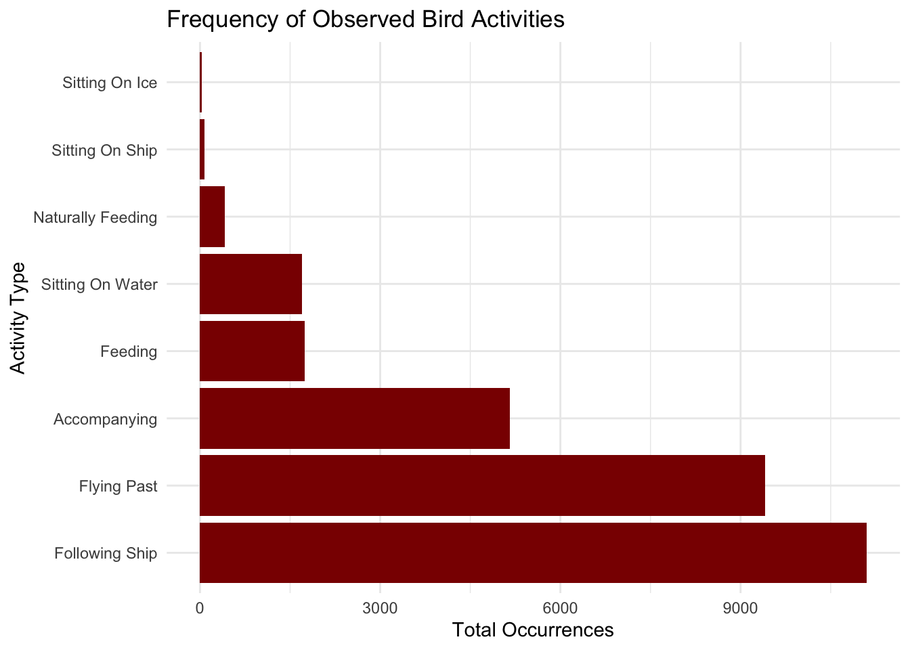
As observed in Figure 2, the most frequent bird activities observed include flying past a ship and following the vessel. As we lost most to all of our ship data during data cleaning, we felt there was little interpretable incentive to focus in on these activities. Hence, we maintained a focus on treating total number of birds observed as our outcome of interest.
Geographic Distribution
We explored geographic distribution of bird observations in the interest of finding a potential relationship between location and flock size.
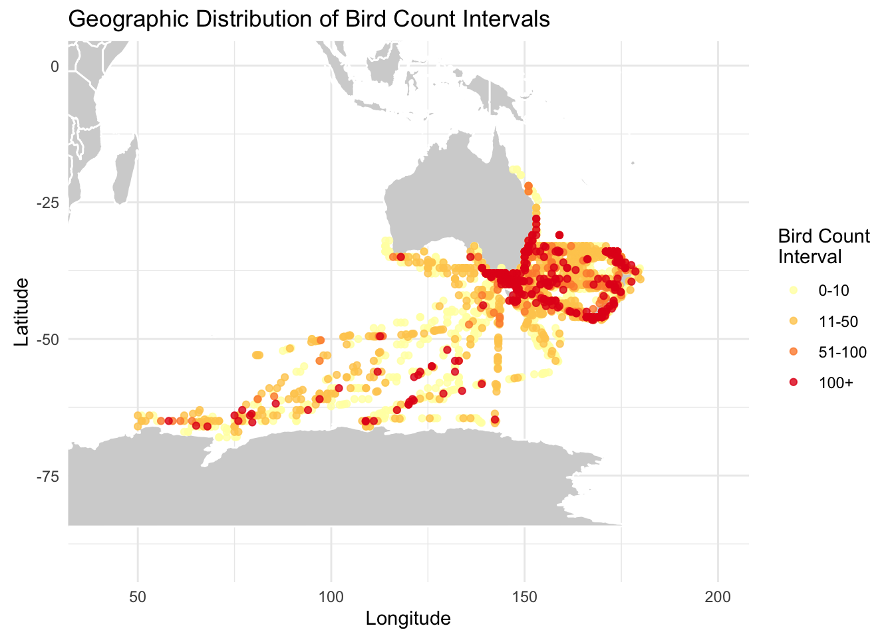
Sightings of larger flocks appear to be highly clustered, as observed in Figure 3; however, this clustering may correlate with the clustering of observation locations.
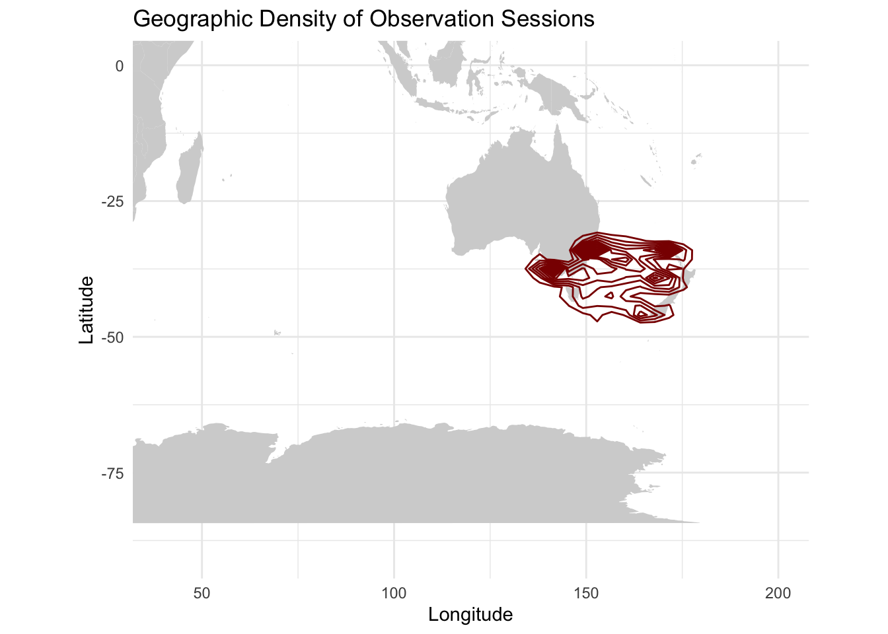
Figure 4 demonstrates that the density of observations in the data align with the density of larger flock observations, which raises the question of whether geographic distribution is providing meaningful information in this investigation.
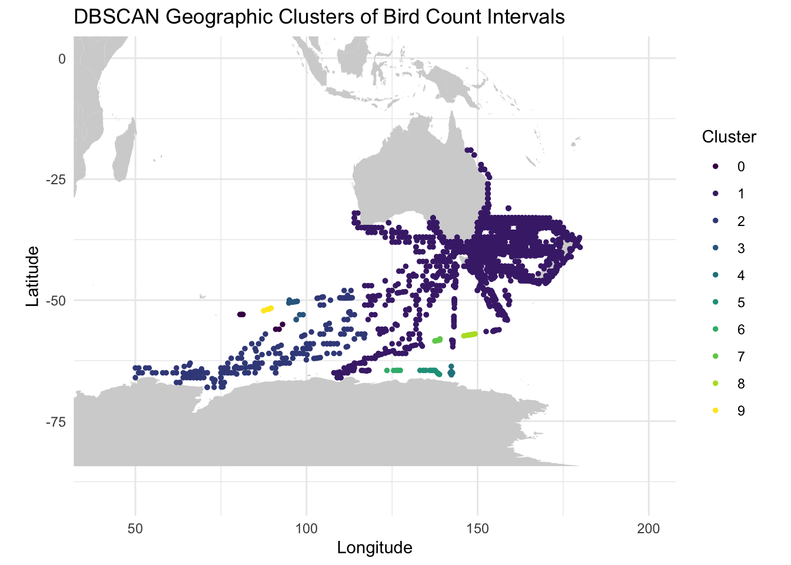
We also used DBSCAN (\(\epsilon = 3\), \(minPts = 5\)) to identify high-density sighting regions. As seen in Figure 5, the clustering heavily reflects the spatial concentration of observation effort.
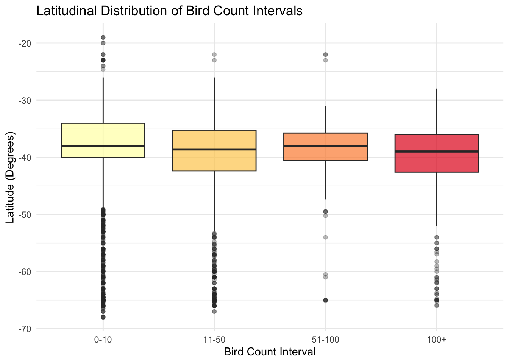
We examined whether certain flock sizes were more common at specific latitudes. Figure 6 suggests that while most sightings occur in temperate southern latitudes, larger flocks are distributed across a similar latitudinal range as smaller sightings.
Overall, larger flock sizes appear to occur around Southern Australia and New Zealand, but we cannot confidently state that these trends reflect true patterns in bird behavior due to the geographic distribution of data collection.
Climate
We explored various climate measures that were available to us to observe their potential relationships with observed bird counts.
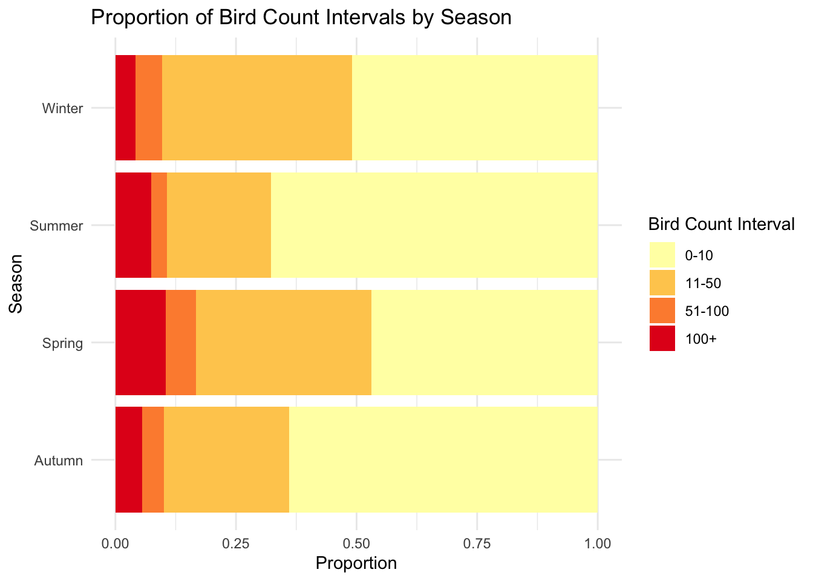
As seen in Figure 7, slightly larger flock sizes may be observed more frequently in the spring and winter, indicating that season could be a useful metric for modeling bird counts.
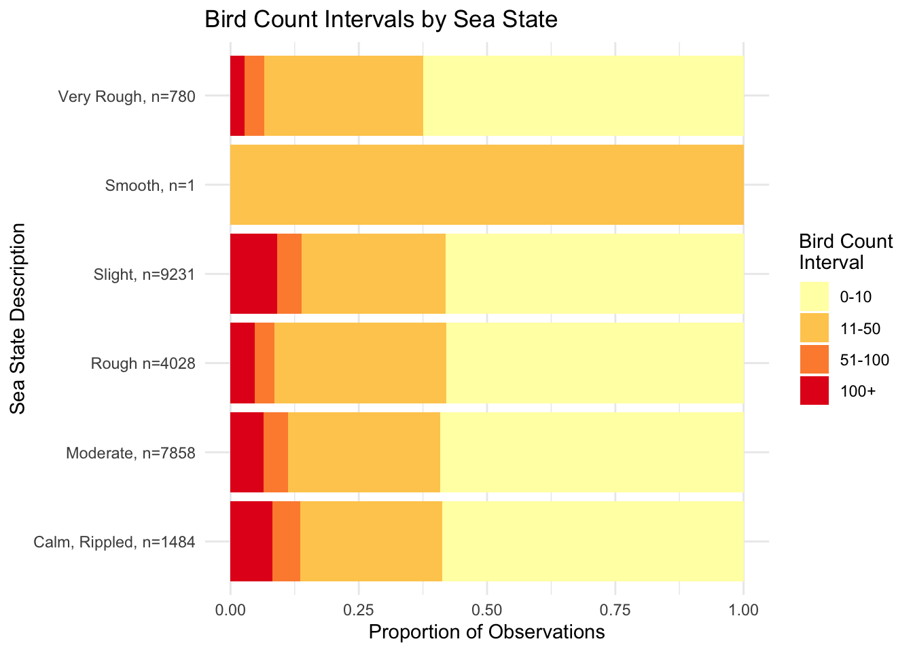
Figure 8 illustrates that, bar the single observation for a smooth sea state, bird counts were roughly similar across sea states. However, there is a slight intuitive increase in larger flock sizes when sea states are calmer, compared to very rough.
Modeling Results
Logistic Regression Comparison
We compared two logistic regression models. Model 1 predicted bird presence (count > 1), while Model 2 predicted large flocks (>50 birds).
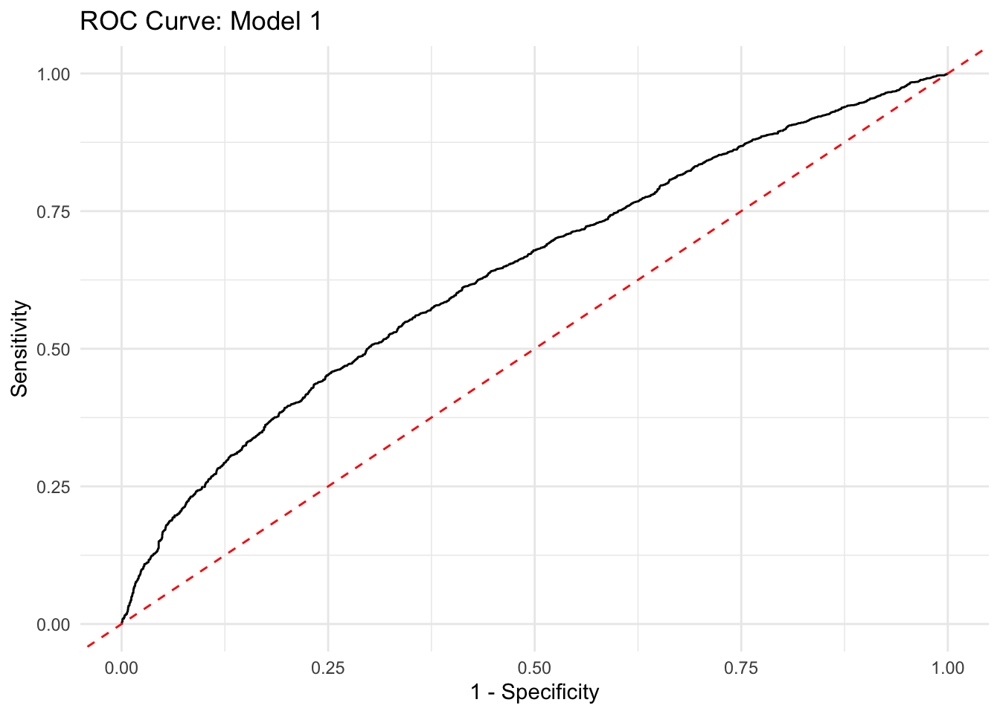
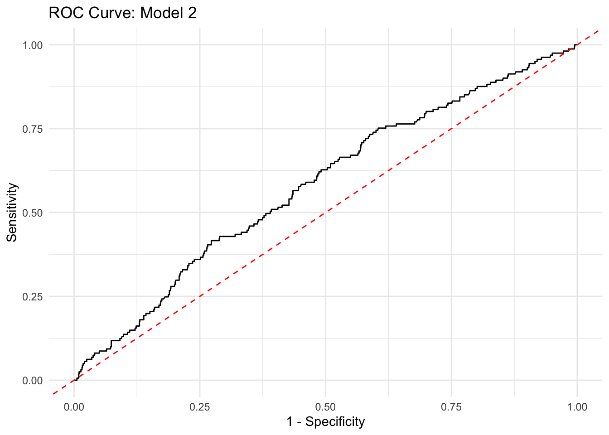
Based on these results (?@fig-modeling-comparison), Model 1 (AUC = 0.6384) performs slightly better than Model 2 (AUC = 0.5815). This indicates that the environmental and spatial factors used in this study are better at discriminating between solo birds and small groups than they are at identifying very large flocks.
Decision Tree Classification
The decision tree classifies bird counts into four intervals (0-10, 11-50, 51-100, 100+). The model achieved a high accuracy (92.1%), largely by correctly identifying the most common small-flock categories.
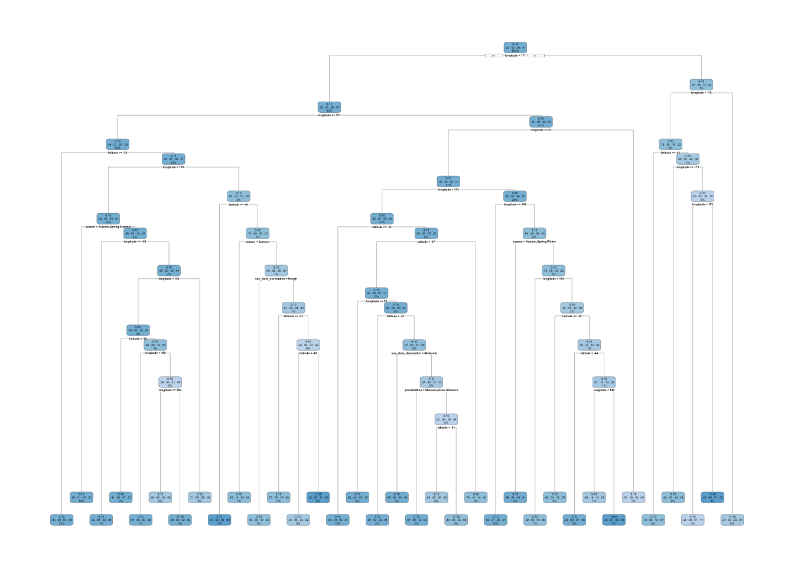
The tree is particularly effective at classifying the 0-10 and 11-50 bird categories, which represent the bulk of the observations (Figure 11). The test error was approximately 0.079, indicating strong performance for these common intervals.
Though this tree has a high success rate, it achieves it through the rather banal approach of classifying nearly every (or is it literally every?) observation as falling within the 0-10 bird interval, and thus it does not seem to truly discriminate between the two flocks more than it simply can bet on flock size being small often enough that it can classify a flock size as small every time. [i worded this poorly]
Discussion
Conclusions
- Skewness: Bird counts are extremely right-skewed. The large range and sparse data in high-count regions make binary or interval classification more robust than regression, but still very limited.
- Geography: Sightings are highly clustered spatially, but this density likely reflects observation locations rather than true flock size trends.
- Environment: Climate factors like cloud cover, sea state, and precipitation may play a role in bird presence, but the moderate AUC (~0.64) in our models suggests significant variance remains unexplained.
- Model Performance: Model 1 (Presence vs Solo) outperformed Model 2 (Large flocks), suggesting environmental predictors are more useful for general presence than for identifying specific high-intensity flocking events.
Future Work
- Temporal Trends: Comparing this historical data to more recent observations from the Sea Bird Tracking Database.
- Global Expansion: Expanding the geographic area to include the Northern hemisphere to see if these ecological relationships hold globally.
- Advanced Modeling: Exploring more non-linear or ensemble methods to continue improving models of the interactions between weather and bird behavior.
- Migration Patterns: Part of our interest in looking at geographic distributions and seasonality was the possibility of piecing together the migration patterns of birds in this region of the world; however, our data were so skewed and limited in interpretability that we were unable to truly explore this. Future work may seek a more robust data set to analyze migration patterns more closely.